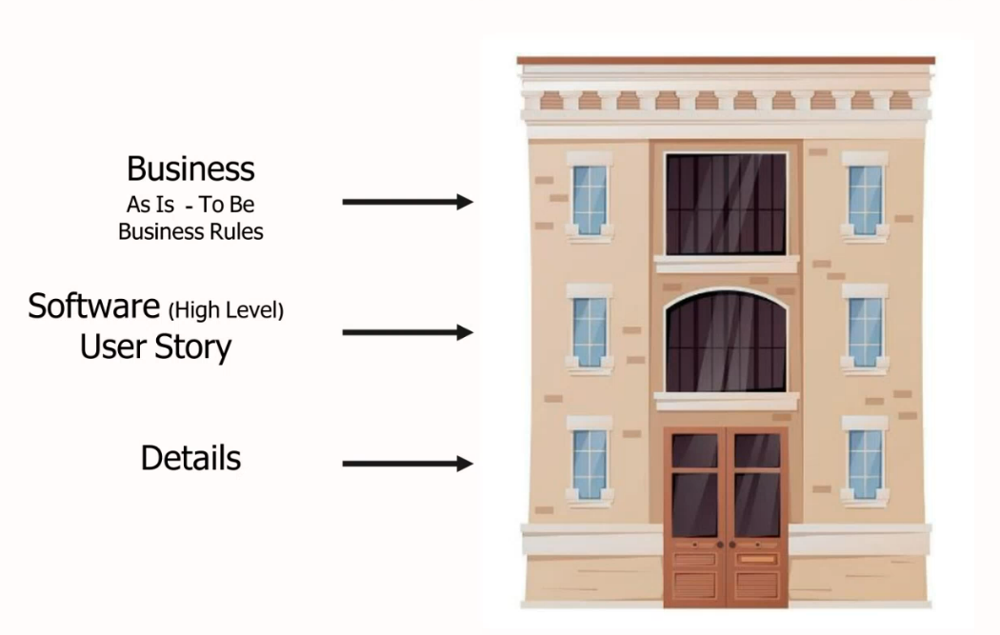

مفاهیم و تعاریف کسب و کار
- کسب و کار: کسب و کار که به نام بنگاه اقتصادی (Enterprise) و شرکت (firm) نیز شناخته میشود، سازمانی (organization) است درگیر تجارت کالا، خدمات یا هر دوی آنها به مصرفکنندگان است.
- ساختار کسب و کار: چارت سازمانی - واحدهایی که در هر سازمان وجود دارند.
- قواعد کسب و کار: Business Rule عبارتی کوتاه درباره کسب و کار و شرحی از یک سیاست Policy یا شرط Condition است که رعایت آن در کسب و کار الزامی است.
قاعده کسب و کار، شرح فرایند نیست بلکه شرایطی است که فرایند در آن اجرا میگردد با انتظار میرود پس از اتمام فرایند محقق شده باشند.
مثلا در حساب سپرده کوتاه مدت: بردشات مبلغ بیش از 15 میلیون در یک روز مجاز نیست.
- شیء کسب و کار: Business Object بیانگر اطلاعاتی است که توسط مجریان کسب و کار استفاده میشود و تغییر داده میشود.
اشیای کسب و کار مبنایی برای اشتراک اطلاعات (جریان یا گردش مستندات) بین مجریان کسب و کار در فرایندهای مختلف ایجاد میکند.
مثال: سند فاکتور، سفارش ساخت، فرم استخدام
- مجری کسب و کار: Business Worker شخص، نرمافزار یا سختافزاری است که اجرای فرایند نتیجه تعامل بن آنهاست. هر یک از مجریان کسب و کار مسئولیتهای مخصی در قبال اجرای فرایند دارند.
مثال: صندوقدار، چاپگر، نرمافزار سفارش آنلاین
- فرایند کسب و کار: شبکهای از فعالیتهای دارای ارزش افزوده که چندین ورودی را دریافت مینماید و آن را به خروجی مشخصی که برای مشتری با ارزش است تبدیل میکند.
شامل فعالیتهای کاملا هدفمند است.
شروع و پایان معینی دارد.
- مدلسازی: به منظور شناسایی مسائل موجود، پیدا کردن بهبودهای قابل انجام، ارزیابی اثرات تغییرات سازمانی و درک مشترک از کسب و کار
- وضعیت جاری و آتی در مدل کسب و کار
- وضعیت جاری Current Status یا As Is: وضعیت کسب و کار قبل از بهبود یا تغییر است که به همراه آن به موارد زیر نیز توجه میشود:
اشکالات موجود در فرایند جاری
کمبودهای نرمافزاری در نرمافزارهای موجود
انتظارات مشتریان و کاربران از فرایندهای جاری
- وضعیت آتی Target Status یا To Be: وضعیت کسب و کار بعد از استقرار سیستم نرمافزاری
کسب و کار آتی به ساختار سازمانی و فرایندهای سازمانی اطلاق میگردد که سیستمهای مورد نظر (راهکاران یا جاری) را به خدمت گرفته است.
به موارد زیر نیز توجه میشود:
کدام یک از اشکالات رفع خواهد شد و چگونه؟
کدامیک از انتظارات برآورده خواهد شد و چگونه؟
امکانات و میزیتهای جدید که در اختیار مشتریان و کاربران قرار گرفتهاست.
- شکاف Gap: اختلاف بین As Is و To Be.

سطوح نیازمندیها
User Story
قالب مناسبی برای بیان ارزش کسب و کار مورد نظر در اقلام بک لاگ محصول است. داستان کاربر به گونهای نوشته میشود که هم برای افراد حوزه کسب و کار و هم برای افراد فنی قابل فهم باشد.
داستان کاربر ساختار سادهای دارد و معمولا به این شکل بیان میشود:
"به عنوان {نقش کاربر} میخواهم به {هدف} دست پیدا کنم تا بتوانم از {مزیت} بهرهمند شوم."
داستانهای کاربر محل فوقالعادهای برای گفت و گو فراهم میکنند و به علاوه میتوانند در سطوح مختلفی از دانهبندی نوشته شوند و تشریح تدریجی آنها نیز کار آسانی است.
Request
در شرایط جاری سیستم برای برگشتی کالا، فقط میتوان تعداد روز مجاز برای ثبت برگشتی را کنترل کرد، در صورتیکه قبل از ثبت برگشتی لازم است مدیر فروشگاه یا شخص انتخاب شده دیگری کالا را از نظر آسیب دیدگی
یا منقضی شدن کالا و غیره بررسی کند و در صورت تایید برگشتی انجام شود تا بتوان حجم برگشتیها را کاهش داد.
As Is
- مشتری محصول خریداری شده و پرینت فاکتور را جهت برگشت به فروشگاه میبرد
- صندوقدار فاکتور را تحویل میگیرد.
- در صورتیکه زمان برگشت محصول به اتمام نرسیده باشد و امکان ثبت برگشتی وجود داشته باشد، صندوقدار فاکتور برگشتی را برمبنای فاکتور ثبت میکند
- صندوقدار محصول را تحویل میگیرد.
- صندوقدار مبلغ حاصل از برگشتی را به مشتری پرداخت میکند.
To Be
- مشتری محصلول خریداری شده و پرینت فاکتور را جهت برگشت به فروشگاه میبرد.
- صندورقدار فاکتور را تحویل میگیرد.
- در صورتیکه زمان برگشت محصول به اتمام نرسیده باشد و امکان ثبت برگشتی وجود داشته باشد، صندوقدار فاکتور برگشتی را برمبنای فاکتور ثبت میکند
- مدیر فروشگاه سند مجوز برگشتی را بررسی میکند و اقلامی که امکان برگشت ندارد را حدف میکند و با قلمهای قابل برگشت، مجوز را تایید میکند.
- صندوقدار برمبنای مجوز برگشتی تایید شده، سند برگشتی ثبت میکند.
- صندوقدار محصول را تحویل میگیرد.
- صندوقدار مبلغ حاصل از برگشتی را به مشتری پرداخت میکند.
User Stories
User Story-1
به عنوان صندوقدار میخواهم سند مجوز برگشتی برمبنای فاکتور را ثبت نمایم تا بتوانم تایید مدیر فروشگاه را برای پس گرفتن کالا دریافت کنم.
Acceptance Criteria
- امکان تعیین کالای برگشتی و مقدار آن در مجوز وجود داشته باشد.
- امکان ابطال مجوز برگشتی وجود داشته باشد.
- امکان ثبت مجوز برگشتی بدون مبنا و مجوز برگشتی با مبنای فاکتور وجود داشته باشد.
User Story-2
به عنوان مدیر فروشگاه میخواهم سند مجوز برگشتی را بررسی، تایید یا رد کنم تا مجوز برگشت کالا را به صندوقدار بدهم.
Acceptance Criteria
- امکان انتخاب فرایند برگشتی با مجوز و بدون مجوز وجود داشته باشد.
- امکان ویرایش سند مجوز قبل از تایید وجود داشته باشد.
- امکان تایید گروهی مجوزها وجود داشته باشد.
User Story-3
به عنوان صندوقدار میخواهم سند برگشت کالا را بر اساس سند مجوز برگشتی تایید شده ثبت نمایم تا بتوانم کالای برگشتی از سوی مشتری را تحویل بگیرم.
Acceptance Criteria
- امکان جستجو و باز کردن سند مجوز با شماره سند و بارکد وجود داشته باشد.
- امکان ثبت چند سند برگشتی برمبنای یک مجوز وجود داشته باشد.
بازگشت به صفحه اصلی